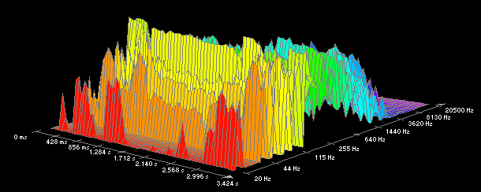

|

|
Las dos operaciones básicas que podemos realizar con el audio en un ordenador son la grabación o captación y la reproducción.
Pero el objetivo del tratamiento automático, es decir, informático del sonido es la modificación de los parámetros que definen un sonido digital. |
|
Img 20. Sonido digital Imagen obtenida de la Universidad de Alicante bajo licencia CC |
U10 - Información digital y Web
2.1. Audio en la web
Actividad
Los parámetros de un archivo de audio digital son:
- Frecuencia de muestreo.- es el número de muestras por segundo que se toman del sonido análogico. De ella depende la calidad del sonido digital. La calidad de CD audio tiene una frecuencia de muestreo de 44.100 Hz. Las nuevas frecuencias de alta definición llegan hasta los 192 KHz.
- Bits de muestreo.- es el número de bits en el que se codifica el sonido digital. La tasa más común a una calidad de CD audio es 16 bits (65.536 posiciones de información).
- Canales.- es el número de pistas que componen un sonido. Los sonidos de una pista se denominan mono y los de dos estéreo.
Al igual que ocurre con las imágenes, la publicación de archivos de audio en internet requiere una relación entre el tamaño del archivo y la calidad del sonido.
El tamaño del archivo en Kbytes está relacionado con los parámetros característicos y el tiempo de duración.
| Tamaño archivo (en Kb) = frecuencia (en KHz) X bits de muestreo (8 ó 16) X canales (1, 2 ó 5) X tiempo de duración (en segundos) |
AV - Reflexión
Calcula el tamaño que ocuparía un archivo de 5 segundos de duración, grabado en estéreo con calidad de CD de audio.
| Formatos de audio |
Para trabajar con archivos de poco tamaño se usan sistemas de compresión que guardan el archivo con distintas extensiones.
| .wav |
WAVE.- formato sin compresión propiedad de Microsoft y de IBM. No se suele usar en internet debido al tamaño de los archivos. |
| .mid |
MIDI.- formato digital que almacena información sobre diferentes instrumentos digitales. No se puede trabajar en editores de audio. |
| .mp3 |
MPEG-1 Audio Layer 3.- formato de audio con compresión con pérdida de calidad. Ha sido el formato más usado en internet debido a su gran difusión en aparatos reproductores. |
| .ogg | OGG.- formato de archivo contenedor multimedia (audio y vídeo) de la fundación Xiph.org, bajo licencia de software libre. Se usa con el códec Vorbis. Es un sistema de compresión con pérdida de calidad. |
| .ra |
REALAUDIO (RM).- formato utilizado para la reproducción en tiempo real desde internet mediante la descarga de los archivos por paquetes. Esto permite tener una radio en línea. No puede ser copiado ni compartido, pero necesita un reproductor RealPlayer. Es propiedad de Real Networks. |
Pre-conocimiento
MP3 VS WMA
La guerra por obtener música gratuita ilegalmente ha sido la noticia de portada en los últimos años. La facilidad para compartir archivos en formato MP3 sin respetar ningún copyright ha sido motivo de grandes y sonadas batallas judiciales.
La empresa Microsoft ha desarrollado un formato de archivo, denominado WMA (Windows Media Audio), con una calidad igual o superior al MP3. Incluye la información del autor en el archivo. Aunque el formato nació para ser reproducido en el programa Windows Media, ya es válido en muchos otros reproductores portátiles.
| Audio on-line |
El uso término on-line es cada vez más habitual. Pero cuando se trata de la reproducción en tiempo real de elementos multimedia se usa el término streaming.
Actividad
El término streaming es la reproducción de audio y de vídeo instantáneamente en una página web, sin necesidad de descargarlo en nuestro equipo.
|
|
| Img 21. Reproductores de streaming Imagen de producción propia |
El streaming se basa en la descarga de datos en el búfer de memoria y en no almacenarlos tras la desconexión.
Cada vez hay más páginas que te permiten escuchar música online, de forma legal como www.rockola.fm o el programa spotify.
Objetivos
Amplía tus conocimientos sobre este tema (definición, reproductores y servidores de streaming) en este artículo.